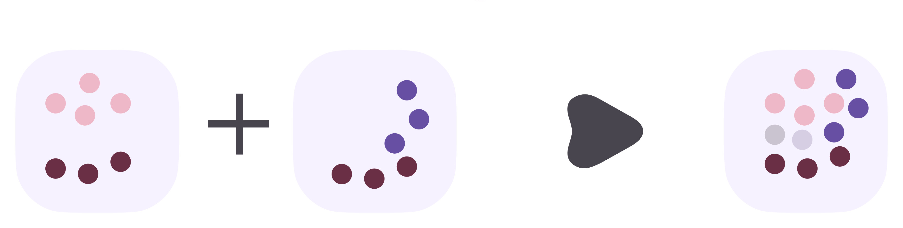

Overview

Citation
@article{MELON2026,
title={MELON: Integrating Multimodal with Learnable Spatial Attention and Contrastive Learning},
author={Author Name and Co-Author Name},
journal={Journal Name},
year={2026},
url={https://link-to-paper.com}
}